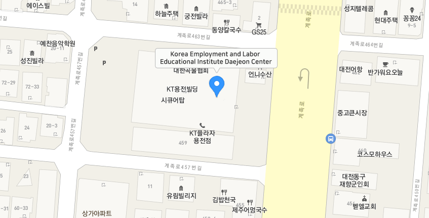

Contact Us
Daejeon Education Institute
HOME
Contact Us
Daejeon Education Institute

Daejeon Education Center, 459, Gyejok-ro, Dong-gu, Daejeon (KT Yongjeon Branch, 3rd floor)
Directions to [Daejeon Education Center]
Directions by car
- Gyeongbu Expressway/Jungbu Expressway Daejeon IC (toward Daejeon) → Yongjeon Intersection → Land Management Office (turn right) → Gyejok-ro 459beon-gil (turn left) → Korea Employment and Labor Education Institute Daejeon Education Center (KT Yongjeon Branch, 3rd floor)
Directions by public transportation
Express bus: Get off at [Daejeon Complex Bus Terminal] and walk for 15 minutes
After getting off the city bus (based on departure from Daejeon Station), it takes 1 minute on foot to the Daejeon Education Center (approximately 200m)- [Daejeon Station] → Get on no. 802 (toward Bongsan-dong) → Get off at [Daejeon Regional Construction and Management Administration] and walk for 1 minute
- [Mokcheok Bridge] → Get on no. 615 (toward Korea Express) → Get off at [Daejeon Regional Construction and Management Administration] and walk for 1 minute
- [Daejeon Station East Square] → Get on no. 102 (towards Sutonggol) → Get off at [Daejeon Regional Construction and Management Administration] and walk for 1 minute